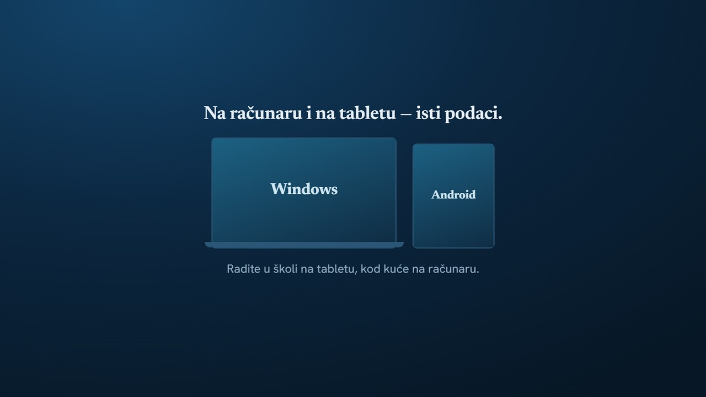
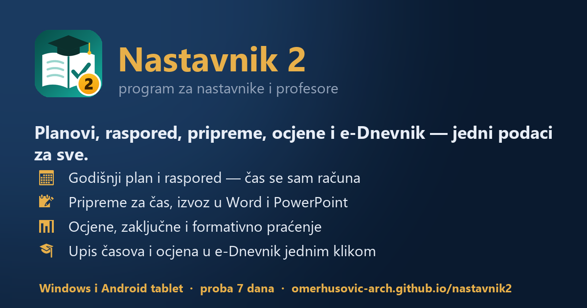
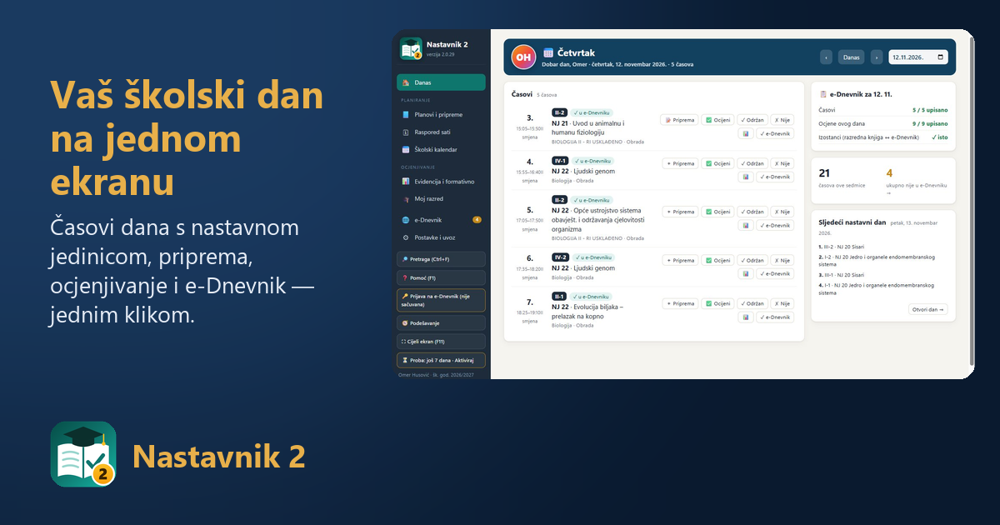
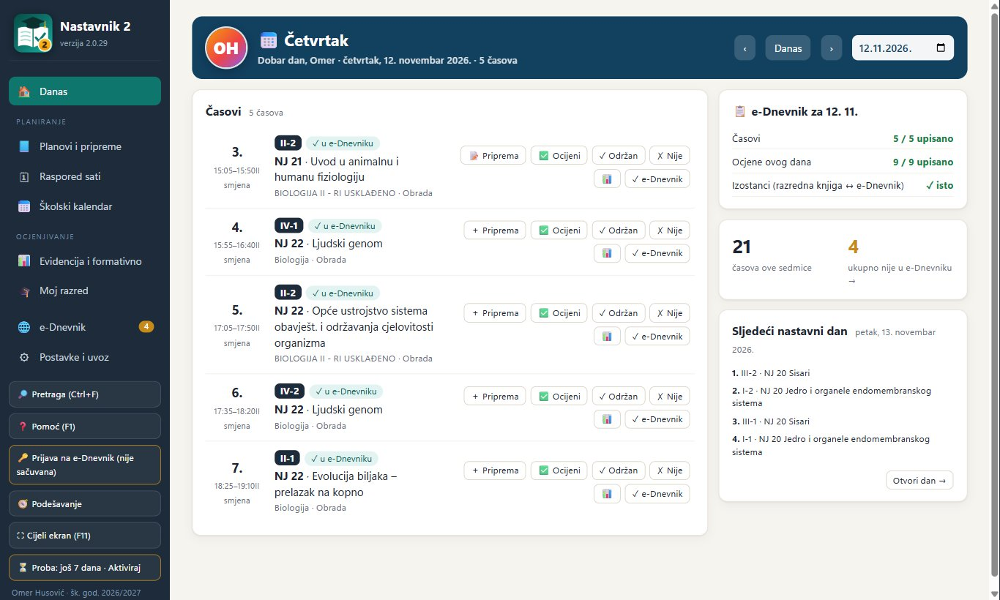
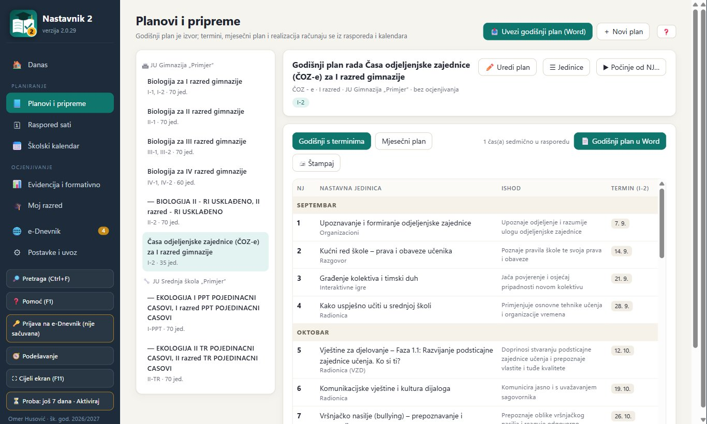
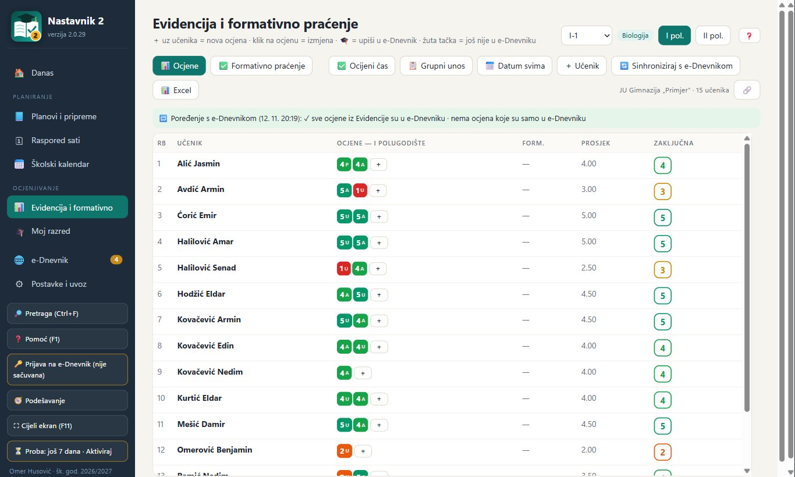
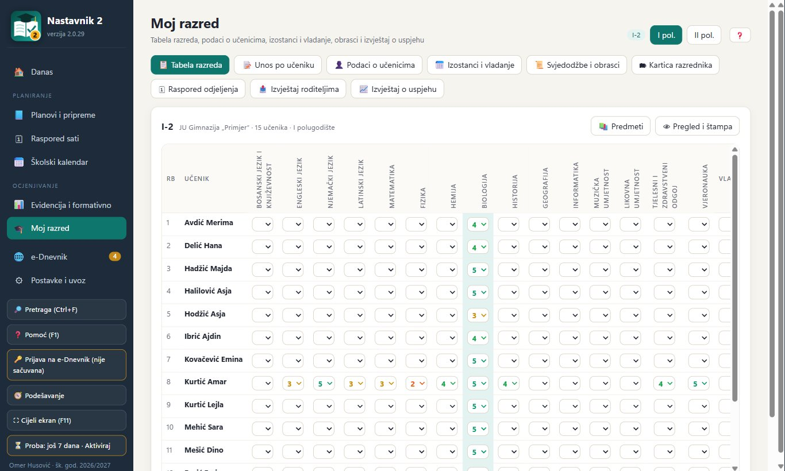
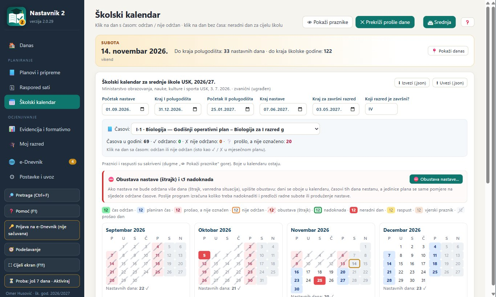
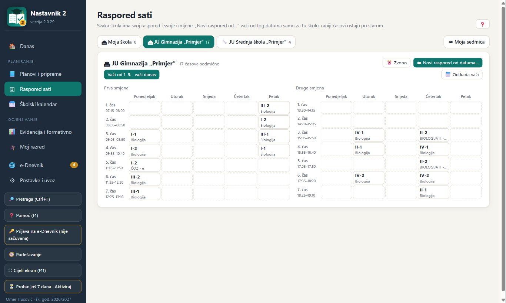

Šta Nastavnik 2 radi
📅 Planovi i rasporedGodišnji plan vezan za odjeljenja, raspored sa datumom važenja, kalendar škole. Čas se sam računa — „nije održan" pomjeri jedinice.
📝 Pripreme za časPriprema za svaki čas na jednom mjestu, izvoz u Word i PowerPoint.
📊 Ocjene i formativno praćenjeOcjene, popravne, zaključne, pet elemenata formativnog praćenja i ostvarenost ishoda po času.
🎓 e-DnevnikOdjeljenja, učenike i raspored preuzima iz e-Dnevnika; upis časova i ocjena u e-Dnevnik jednim klikom.
👥 Razredništvo i svjedodžbeKarton učenika, izostanci, tabela razreda, izvještaji za roditelje i zaključne ocjene za svjedodžbe.
💾 Vaši podaci ostaju kod vasSve je na vašem računaru ili tabletu, svaki dan rezervna kopija (30 dana). Program ništa ne šalje.



Kako izgleda
Slike su napravljene s izmišljenim učenicima. Kliknite sliku za veći prikaz.












Instalacija na računar (Windows)
- Kliknite „⬇ Windows (instalacija)“ i pokrenite preuzeti fajl Nastavnik2-Setup.exe.
- Ako se pojavi „Windows je zaštitio vaš računar“: kliknite „Više informacija“, pa „Pokreni ipak“. Program još nema digitalni potpis, zato se javlja to upozorenje.
- Na radnoj površini se pojavi prečica „Nastavnik 2“. Pri prvom pokretanju vodič vas vodi korak po korak — većinu podataka (odjeljenja, učenike, raspored) preuzima iz e-Dnevnika.
Ako Windows blokira instalaciju („Kontrola pametnih aplikacija“ / Smart App Control): preuzmite
Nastavnik2.zip,
raspakujte mapu „Nastavnik 2“ (npr. u Dokumenti) i pokrenite Nastavnik2.exe. Nova verzija: raspakujte novi ZIP preko stare mape — podaci ostaju.
Instalacija na tablet ili telefon (Android)
- Na uređaju otvorite ovu stranicu i kliknite „⬇ Android“.
- Otvorite preuzeti Nastavnik2.apk i dozvolite instalaciju iz nepoznatih izvora (samo prvi put).
- Nova verzija se instalira preko stare. Na telefonu se meni otvara dugmetom ☰ gore lijevo.
- Podaci s računara: na računaru Postavke → „Sačuvaj sve u jedan fajl“, fajl pošaljite na tablet, pa na tabletu Postavke → „Učitaj fajl s drugog uređaja“.
Proba i ključ
7 dana bez ograničenja
Za dalji rad potreban je ključ, koji važi za jedan računar ili uređaj. U programu otvorite 🔑 Aktivacija —
tamo je kod vašeg uređaja i kontakt na koji ga pošaljete; dobit ćete ključ. Podaci ostaju sačuvani.
Pomoć: dugme „Pomoć“ u meniju (na računaru i tipka F1) otvara uputstvo za dio programa u kojem se nalazite.